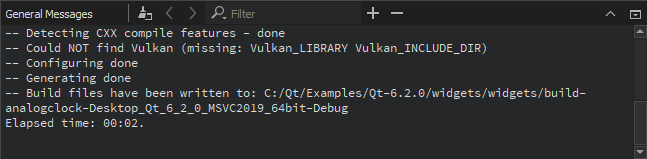
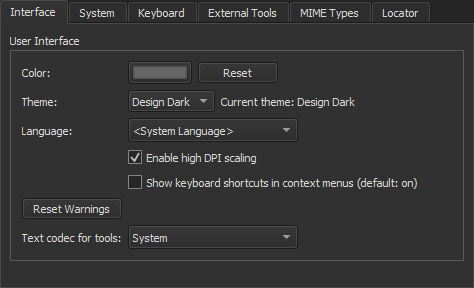
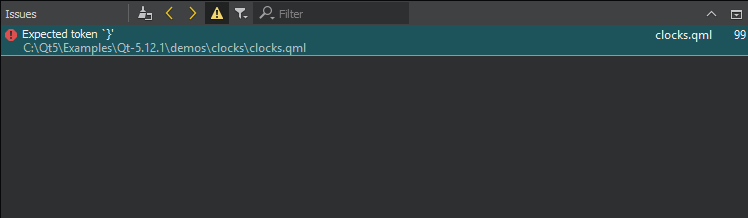
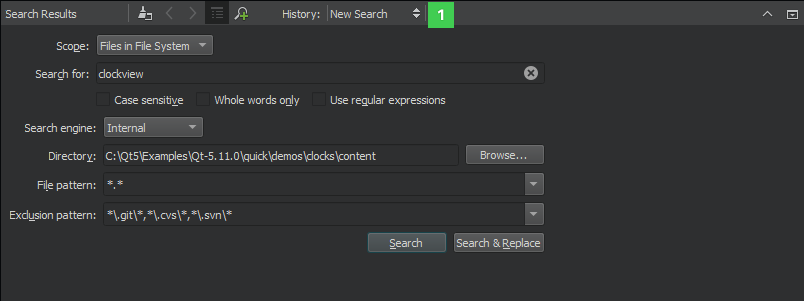
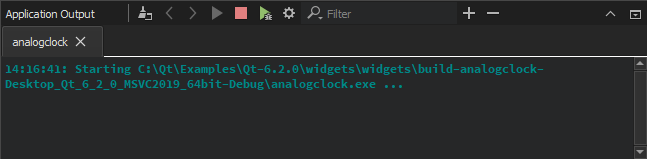
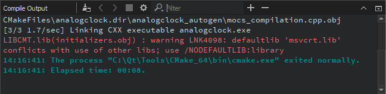
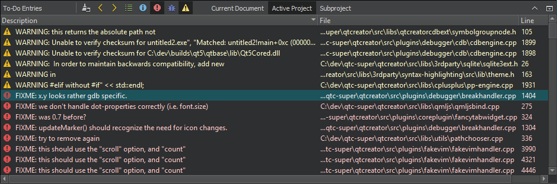
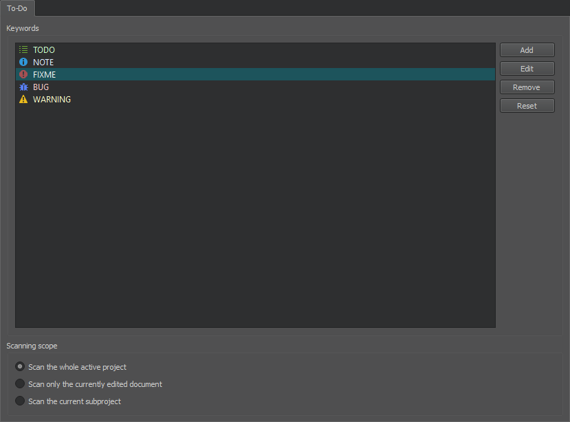

Viewing Output

The task pane in Qt Creator can display one of the following panes:
- Issues
- Search Results
- Application Output
- Compile Output
- QML Debugger Console
- General Messages
- Version Control
- Test Results
- To-Do Entries
Output panes are available on the taskbar in all modes.
You can open output panes in the following ways:
- Select the output pane on the taskbar.
- Select Alt (Cmd on macOS) and the number of the pane on the taskbar.
- Select , and then select the pane to open.
- Select View > Output Panes. The menu items also display the keyboard shortcuts that you can use.
To maximize an open output pane, select the  (Maximize Output Pane) button or press Alt+Shift+9.
(Maximize Output Pane) button or press Alt+Shift+9.
To increase or decrease the output text size, select  (Zoom In) or (Zoom Out), or press Ctrl++ or Ctrl+-. Zooming is not supported in all output panes.
(Zoom In) or (Zoom Out), or press Ctrl++ or Ctrl+-. Zooming is not supported in all output panes.
To open the General Messages and Version Control panes, select View > Output Panes. To display the To-Do Entries pane, enable the Todo plugin. For more information about the QML Debugger Console view, see Executing JavaScript Expressions.
If the text in the output panes is not displayed correctly, Qt Creator might be using a different codec from the one used by the tools that generate the output. To specify the codec to use, select Tools > Options > Environment > Interface, and then select the codec in the Text codec for tools field.

Finding and Filtering Output
To search from output, press Ctrl+F when the pane is active. Enter search criteria in the Find field. For more information, see Finding and Replacing.
Besides searching from the output, you can enter a string in the Filter field to filter it. To specify filtering options, select the  button. You can filter output by using regular expressions or case-sensitivity. Select Show Non-matching Lines to hide the lines that match the filter.
button. You can filter output by using regular expressions or case-sensitivity. Select Show Non-matching Lines to hide the lines that match the filter.
Finding and filtering are not supported in all output panes.
Issues
The Issues pane provides lists of following types of issues:
- Autotests - Errors and warnings encountered while running tests.
- Build System - Errors and warnings encountered during a build.
- Clang Code Model - Errors and warnings from the current editor.
- Compile - Selected output from the compiler. Open the Compile Output pane for more detailed information.
- Debug Information - Lists debug information packages that might be missing.
- Debugger - Errors encountered while running the Valgrind code analysis tools.
- Debugger Runtime - Errors encountered when starting Qt Creator. For example, information about missing DLLs.
- Deployment - Errors encountered between building an application successfully and starting it on a device.
- My Tasks - Entries from a task list file (.tasks) generated by code scanning and analysis tools.
- Python - Runtime errors and exceptions of Python scripts.
- QML and QML Analysis - QML and JavaScript syntax errors.
The pane filters out irrelevant output from the build tools and presents the issues in an organized way. To further filter the output by type, select  (Filter Tree) and then select a filter.
(Filter Tree) and then select a filter.

Right-clicking on a line brings up a context menu with actions that you can apply to the contents of the line. You can remove a line, copy its contents to the clipboard, or search the Internet for a solution using the contents of the line as search criteria. In addition, you can show a version control annotation view of the line that causes the error message.
To navigate to the corresponding source code, click an issue or select Show in Editor in the context menu. The entry must contain the name of the file where the issue was found.
To view more information about an issue in the Compile Output pane, select Show Output in the context menu.
To jump from one issue to the next or previous one, press F6 and Shift+F6.
By default, the Issues pane is cleared on a new build. To keep the issues from the previous build rounds, deselect Tools > Options > Build & Run > General > Clear issues list on new build.
Search Results
In the Search Results pane, you can search through projects, files on a file system or the currently open files:

The search results are stored in the search history (1) from which you can select earlier searches.
The figure below shows an example search result for all occurrences of the search string in the specified directory.

For more information about the different search options, see Finding and Replacing.
Application Output
The Application Output pane displays the status of a program when it is executed, and the debug output.

If you specify command line arguments in the run settings that are passed to the application when running it, they are displayed as a part of the application output. For more information, see Specifying Run Settings for Desktop Device Types. Select toolbar buttons to run applications, to attach the debugger to the running application, and to stop running or debugging.
To specify settings for displaying application output, select Tools > Options > Build & Run > Application Output, or click the (Open Settings Page) button. You can select whether to open the Application Output pane on output when running or debugging applications, to clear old output on a new run, to word-wrap output, and to limit output to the specified number of lines.
Compile Output
The Compile Output pane provides all output from the compiler. The Compile Output is a more detailed version of information displayed in the Issues pane.

Double-click on a file name in an error message to open the file in the code editor.
Select the Cancel Build button to cancel the build.
To specify whether to open the Compile Output pane on output when building applications, select Tools > Options > Build & Run > Compile Output, and then select the Open pane when building check box. In the Limit output to field, you can specify the maximum amount of build output lines to display in the pane.
You can also reach the options page by clicking (Open Settings Page).
To copy the output from the pane to the clipboard, select Select All in the context menu, and then select Copy. Save the output as a file if you want to examine it later without having to build the project again. This is useful for large projects that take a long time to build.
Parsing Existing Compile Output
You can use Qt Creator's output parsers to parse output from builds done outside of Qt Creator or stored from previous build runs. By default, the parsers from the kit selected for the active project are used, but you can select another kit.
To parse compile output:
- Select Tools > Parse Build Output.

- Paste the build output in the Build Output field, or select Load from File to load it from a file.
- Deselect the Output went to stderr check box if the parser expects issues on
stdout. - In the Use parsers from kit field, select the kit to use for parsing the output. Select Manage to view and modify kit settings.
- The parser displays the parsed output in the Issues pane. By default, the pane is cleared before adding the new output. Deselect the Clear existing tasks check box to append the new output to the old output.
- Select OK to start parsing.
To-Do Entries
The To-Do Entries pane lists the BUG, FIXME, NOTE, TODO, and WARNING keywords from the current file, from all project files, or from a subproject. Click the icons on the toolbar to show only the selected keywords.

To add keywords, select Tools > Options > To-Do > Add. Set an icon and a line background color for the keyword.

To change the icon and line background color of the selected keyword, select Edit.
To remove the selected keyword, select Remove.
To reset the list to predefined keywords, select Reset. All your changes will be permanently lost.
To determine whether the keywords in the whole project, in the current file, or in a subproject are displayed by default, select the appropriate option in the Scanning scope group.
To exclude files from scanning, select Project Settings > To-Do in the Projects mode. Select Add and enter a regular expression that matches the path to files to exclude. Use a forward slash (/) as a separator in the path also on Windows.
The Todo plugin is disabled by default. To enable the plugin, select Help > About Plugins > Utilities > Todo. Then select Restart Now to restart Qt Creator and load the plugin.
In addition, you can open task list files generated by code scanning and analysis tools in the Issues pane. For more information, see Showing Task List Files in Issues Pane.